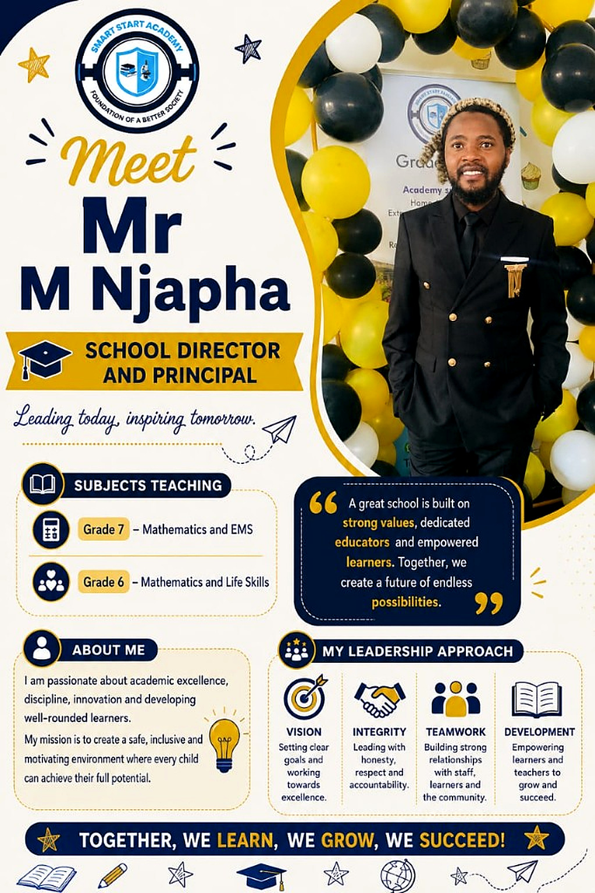
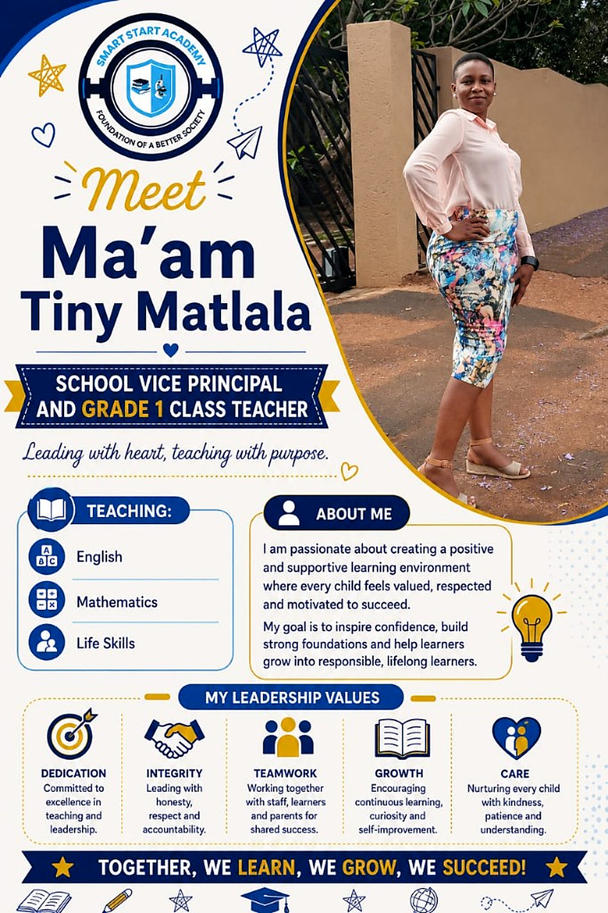
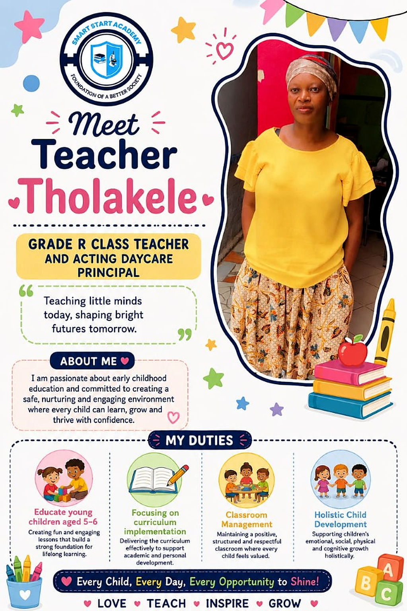
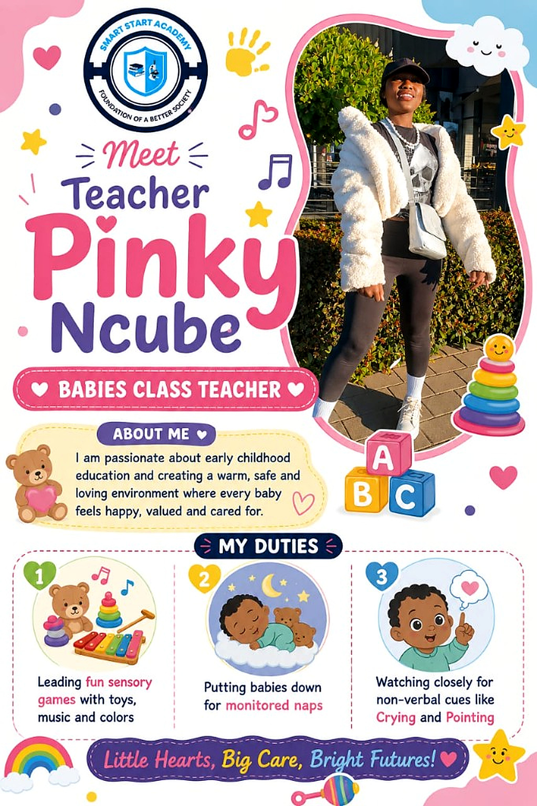
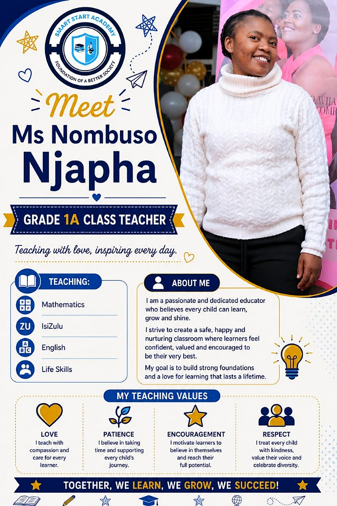
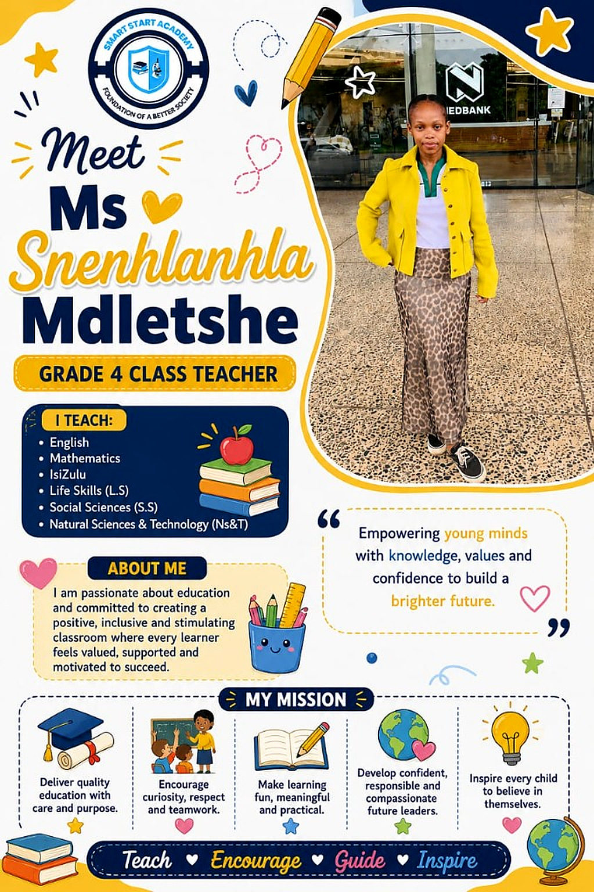
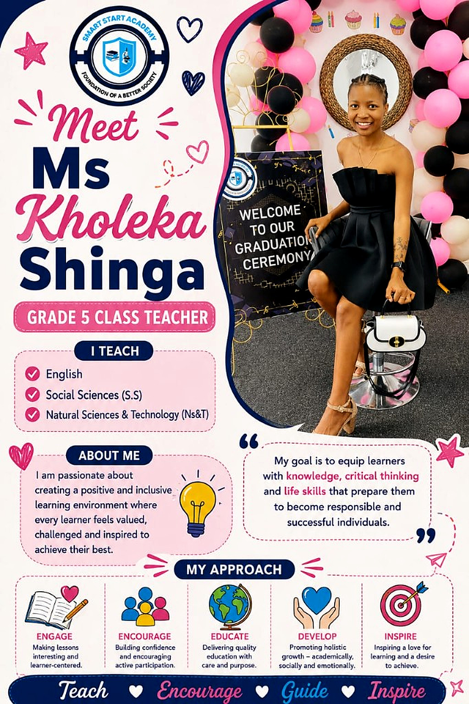
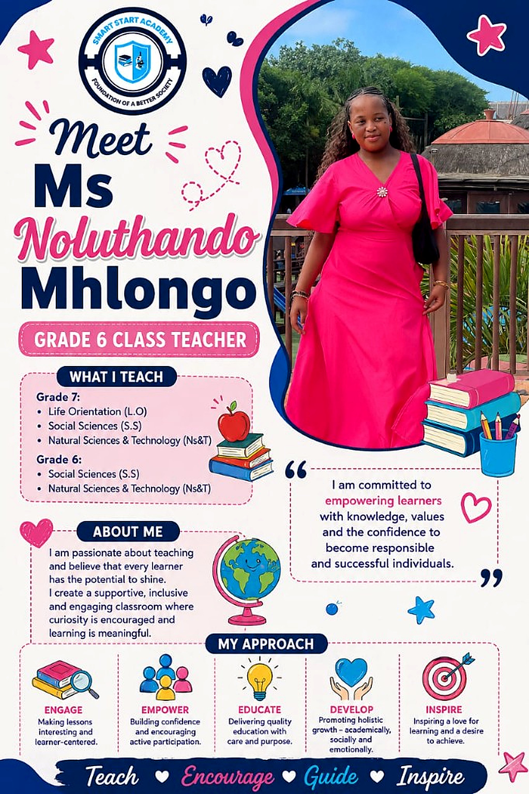

Mr M Njapha
School Director and Principal
A great school is built on strong values, dedicated educators and empowered learners.
Grade 7 Mathematics and EMS · Grade 6 Mathematics and Life Skills
Our Teachers

School Director and Principal
Leading today, inspiring tomorrow. Mr Njapha is passionate about academic excellence, discipline, innovation and developing well-rounded learners. His mission is a safe, inclusive and motivating environment where every child can achieve their full potential.
He is a dedicated lifelong learner with 5 years of teaching experience and a Curriculum Studies Honours candidate at the University of Johannesburg.
Teaches Grade 7 Mathematics and EMS, and Grade 6 Mathematics and Life Skills.
The Team
Open any profile to see the full introduction. Our educators are committed to meaningful learning experiences for every child.

School Director and Principal
A great school is built on strong values, dedicated educators and empowered learners.
Grade 7 Mathematics and EMS · Grade 6 Mathematics and Life Skills

Vice Principal and Grade 1 Class Teacher
Leading with heart, teaching with purpose. She creates a positive environment where every child feels valued, respected and motivated to succeed.
English · Mathematics · Life Skills

Grade R Class Teacher and Acting Daycare Principal
Teaching little minds today, shaping bright futures tomorrow. She educates children aged 5–6 in a safe, nurturing classroom.
Curriculum · Classroom management · Holistic development

Babies Class Teacher
She creates a warm, safe and loving environment where every baby feels happy, valued and cared for.
Sensory play · Monitored rest · Care and early cues

Grade 1A Class Teacher
Teaching with love, inspiring every day. She builds strong foundations and a love for learning that lasts a lifetime.
Mathematics · IsiZulu · English · Life Skills

Grade 4 Class Teacher
She is committed to a positive, inclusive classroom where every learner feels valued, supported and motivated to succeed.
English · Mathematics · IsiZulu · Life Skills · Social Sciences · Natural Sciences & Technology

Grade 5 Class Teacher
Her goal is to equip learners with knowledge, critical thinking and life skills that prepare them to become responsible and successful individuals.
English · Social Sciences · Natural Sciences & Technology

Grade 6 Class Teacher
She is committed to empowering learners with knowledge, values and the confidence to become responsible and successful individuals.
Grade 6 and 7: Social Sciences and Natural Sciences & Technology · Grade 7 Life Orientation
Grade 7 Class Teacher and Sports Organizer
Inspiring minds, building character, shaping champions. He helps learners discover their potential in the classroom and on the field.
Grade 7: IsiZulu, English and Creative Art · Grade 6: IsiZulu, English and Life Skills